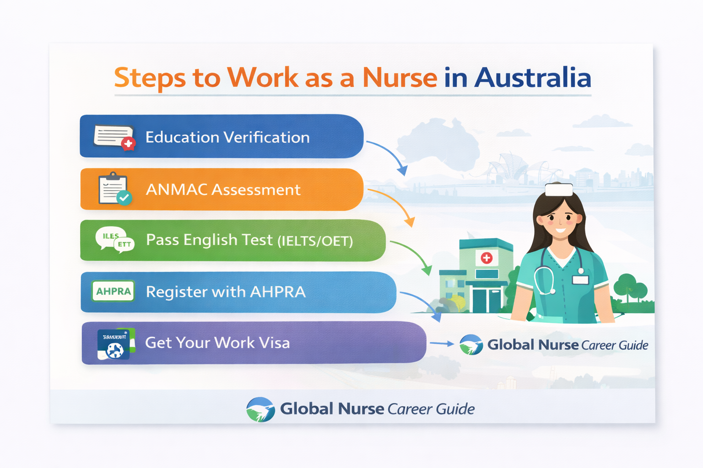

Complete guide for international nurses applying to work in Australia.
Australia offers attractive career opportunities for nurses, with competitive salaries and a strong healthcare system. However, international nurses must meet strict licensing and immigration requirements.
The Australian Health Practitioner Regulation Agency (AHPRA) regulates nurses in Australia. Applicants must submit their qualifications for assessment.
Most applicants must demonstrate English proficiency through exams such as IELTS or OET.
The Australian Nursing and Midwifery Accreditation Council (ANMAC) assesses the skills of international nurses applying for migration.
Common visa options include skilled migration visas for healthcare professionals.
International nurses can work in hospitals, clinics, and community healthcare services.

This infographic explains the process international nurses must follow to work in Australia, including ANMAC assessment, AHPRA registration, English language requirements, and obtaining a work visa.